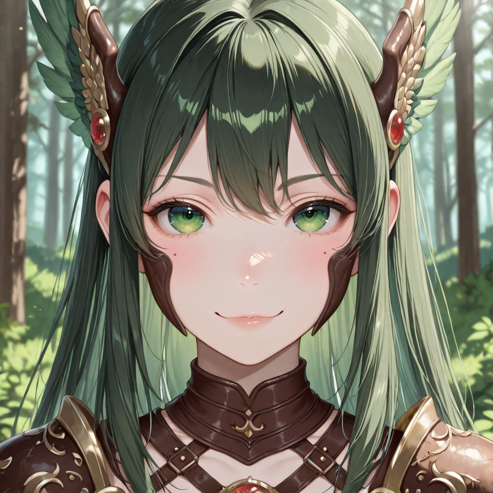
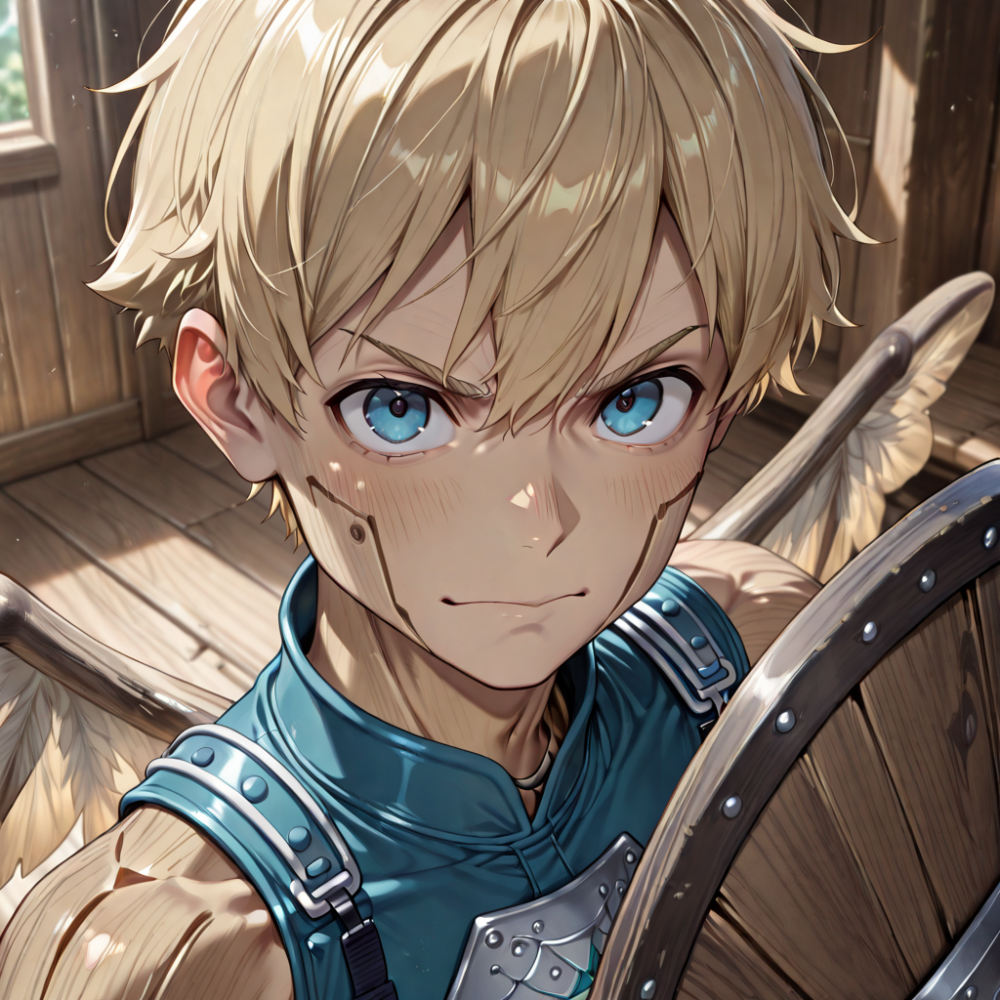
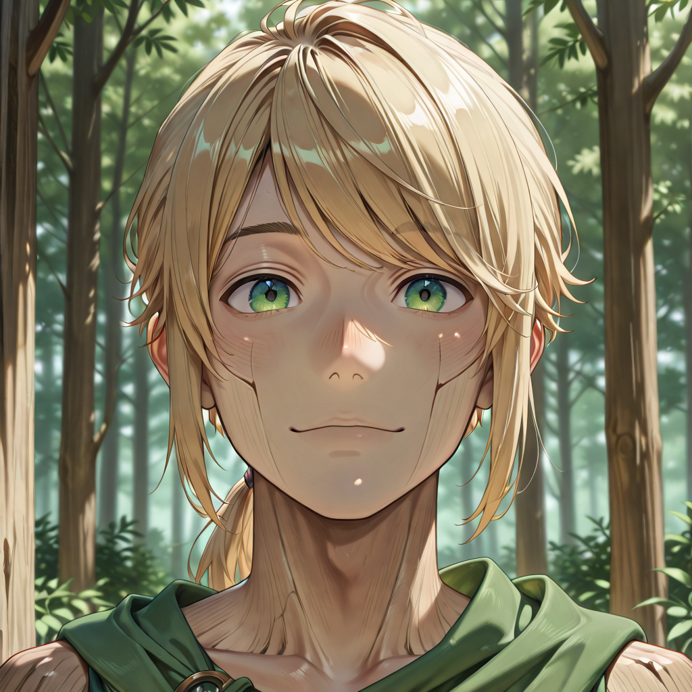
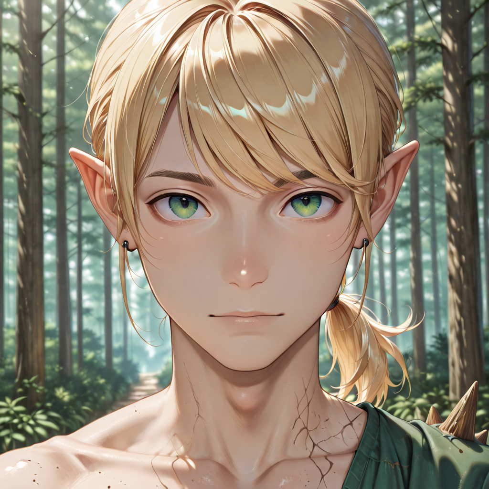
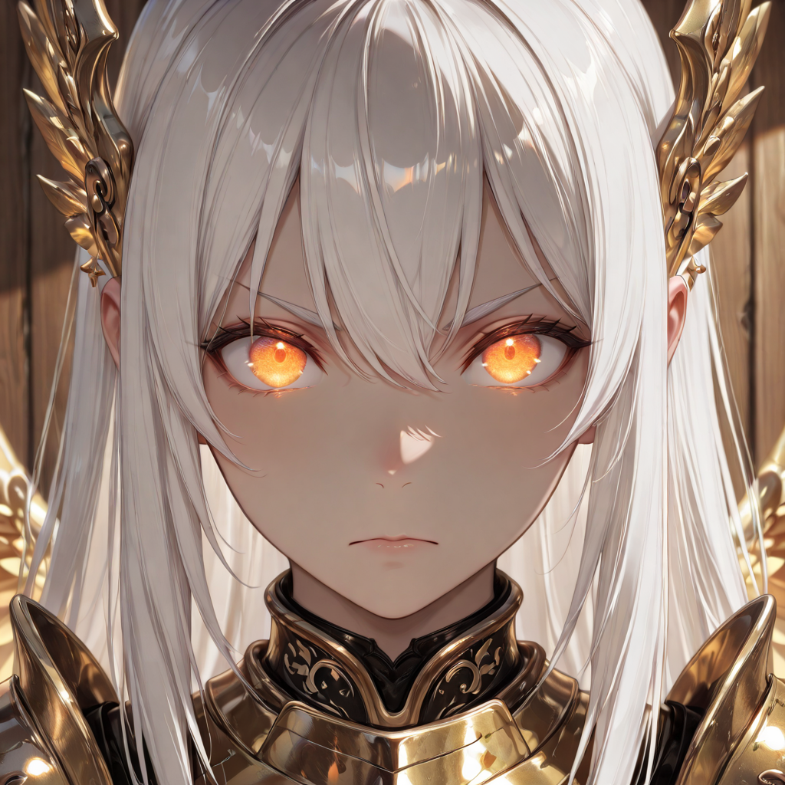
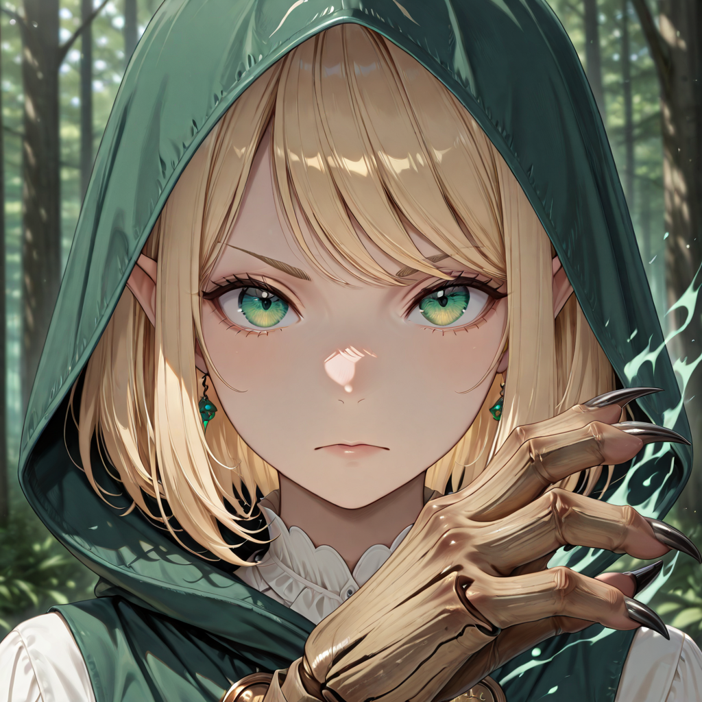
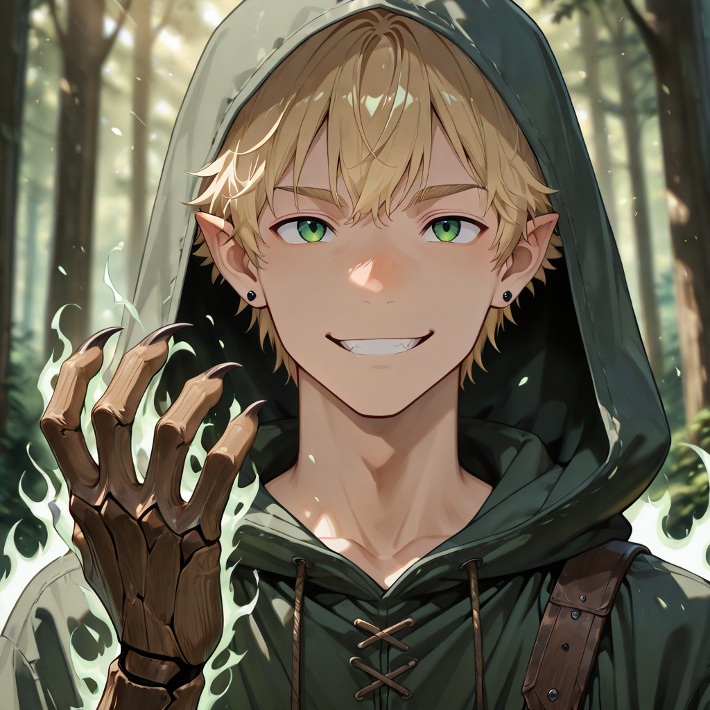
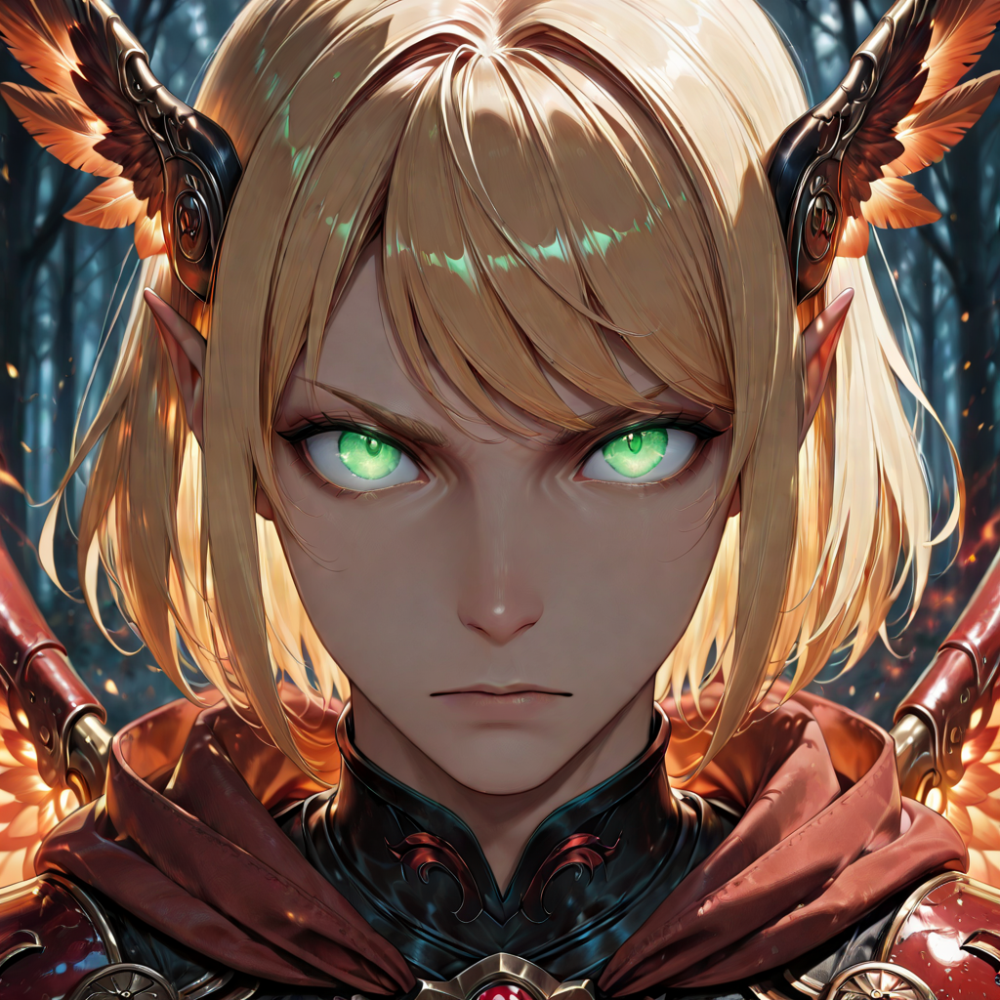

The Nightmare of Heavy Infantry
The Arboreal Fighters are the Empire's feared frontline , the incarnation of nature tearing through stone. Their hybrid bodies seem carved from ancient, weathered wood, yet their outlines shimmer and vibrate like a desert mirage. They do not exist on a single plane: they phase between the material world and the ethereal, a biological trait that makes them simultaneously harder to kill and harder to understand.
In the Economy of Merit, the Arborei are regarded with reverence mixed with awe. During the Breath of the Moon, they often stand as silent sentinels on the rooftops and walls , statues watching over the sleeping living, embodying Malicott's promise: "We Want to Live," at any cost.
Their evolution follows two divergent paths shaped by the soul's instinct. Those who embrace protection grow heavier, more immovable , their ethereal form hardening into something that refuses to yield. Those whose spirit turns inward toward speed and shadow shed their form entirely, becoming predators moving between worlds. Both paths converge only in the Assassin Defender of the Peoples, a being that has transcended both natures and become something new entirely.
Active Roster


Patrol
Warriors of unknown origin. They've earned deep esteem among the undead and know how to lead troops to victory through coordinated positioning.


Ethereal Swordsman
The newly born, or those who have not yet experienced the Arborei path. They have nothing but a wooden sword. Fragile, defensive, and highly mobile.


Frontline Defender
Those who have grown familiar with great shields and long weapons. Fully arboreal yet ethereal, they bear the blows of adversaries on behalf of the group. They have wings, but can only glide.


Shadow Combatant
Those who have grown familiar with small blades. They begin to lose their arboreal form, recalling the grace and symbiosis of a past life , but not yet who they were.


Squire of the Homeland
They remember the thrill of the skies. Incorruptible protectors of humanity, still ethereal but shed of the arboreal form. They defend the Empire with unwavering loyalty.


Assassin of the Trees
They remember pointed ears, tranquility, the forests. They have nearly lost the arboreal form entirely but still do not remember who they are.


Valkyrie Defender of the Homeland
They took flight. They traded long weapons for colossal axes. Malicott granted them a feather from her own wings , and with it, the power to truly soar and fight for their kin.


Elf Assassin
They finally remember who they are. Claws replace blades. No arboreal form remains. They have accepted their role as the weapons of their bloodline.


Assassin Defender of the Peoples
Those who have surpassed the barrier of possibility. Neither forest-kin nor sky-warrior, but the love of both lives within them. A new bloodline, born from the merger of two souls.